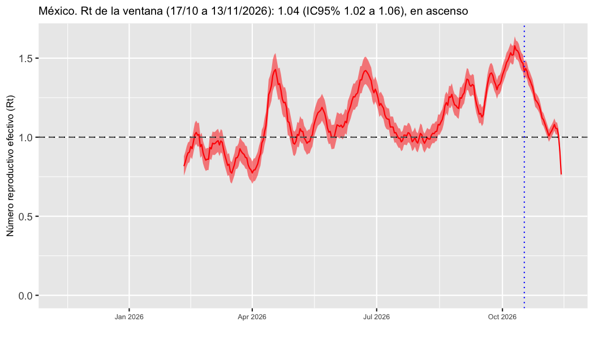

Effective reproductive number (Rt) of dengue
Source:vignettes/reproduction_number.Rmd
reproduction_number.RmdIntroduction
The effective reproductive number (Rt) is the average number of new cases generated by each case at a given time. If Rt > 1 transmission grows; if Rt < 1, it declines. Together with the epidemic curve, it tells the phase of the outbreak of an area: increasing, stable or decreasing.
The rt_dengue() function of densnv
estimates the Rt of dengue for the country, a state, a
municipality or a locality with the SINAVE dataset.
mp_active_foci() also uses it to diagnose the
epidemiological scenario of a locality. The phase labels are in Spanish:
“En ascenso” (increasing), “Estable” (stable) and “En descenso”
(decreasing).
Data
load("dengue_mx_2026.RData")The function needs FEC_INI_SIGNOS_SINT,
ESTATUS_CASO and, depending on the level, the INEGI keys of
the place of report (CVE_EDO_REP, CVE_MPO_REP,
CVE_LOC_REP) or of residence (*_RES). The
cases do not need to be geocoded.
How it is estimated
rt_dengue() uses the method of Cori et al. (2013), EpiEstim package.
For each day it compares:
- The new cases of that day.
-
The infectiousness of the previous cases: the sum
of the cases of the previous days, weighted by the serial
interval (time between the onset of a case and the onset of the
cases it generates). For dengue a gamma distribution with mean
mean_si= 21 days and standard deviationstd_si= 6.1 is used (intrinsic plus extrinsic incubation).
In short, Rt ≈ new cases / infectiousness of the previous cases.
Why a window?
Daily counts are very noisy: 1 case one day, 8 the next, 0 the next. With a single day, Rt would jump without any real change in transmission. The window pools the cases of several days and assumes Rt constant within it. Precision depends on the number of cases in the window: the coefficient of variation of Rt is about 1/√(cases).
| cases_in_window | coefficient_of_variation |
|---|---|
| 12 | 0.29 |
| 50 | 0.14 |
| 100 | 0.10 |
| 500 | 0.04 |
There is a trade-off between speed and precision:
- Short window (7 days): detects changes sooner, with wide intervals.
- Long window (28 days): narrow intervals, but slower to show a change of phase. The last days of the dataset are incomplete because of the delay of report, and they weigh less in a long window.
rt_dengue() estimates two things:
-
The curve: weekly sliding windows with at least 10
cases, starting
mean_si+ 2std_sidays after the beginning of the dataset (before that there is no history of cases and Rt is overestimated). -
The Rt of the current window: the last
window_daysdays up toref_date, with its 95% credible interval, which gives the phase of the outbreak:- En ascenso (increasing): lower limit > 1.
- Estable (stable): the interval includes 1.
- En descenso (decreasing): upper limit < 1.
Place of report or residence
The place argument sets which place is used to select
the cases:
-
"REP"(default), place of report. In non-endemic areas (e.g. Mexico City) the positive cases are reported in the place where they were exposed, so the place of report is the place of transmission. -
"RES", place of residence. In endemic areas it is almost the same as the place of report.
cdmx <- lapply(c("REP", "RES"), function(p)
rt_dengue(dataset = z,
level = "state",
place = p,
cve_edo = "09",
status_caso = c(1, 2),
ref_date = NULL,
period_days = 365,
window_days = 28,
mean_si = 21,
std_si = 6.1,
plot = FALSE))
data.frame(place = c("REP", "RES"),
cases = sapply(cdmx, function(r) sum(r$incidencia$I)))
#> place cases
#> 1 REP 9
#> 2 RES 41By geographic level
Country
rt_mx <- rt_dengue(dataset = z,
level = "country",
place = "REP",
cve_edo = NULL,
cve_mpo = NULL,
cve_loc = NULL,
status_caso = c(1, 2),
ref_date = NULL,
period_days = 365,
window_days = 28,
mean_si = 21,
std_si = 6.1,
plot = FALSE)
rt_mx$rt_ventana
#> inicio fin casos rt rt_inf rt_sup fase
#> 1 2026-10-17 2026-11-13 10704 1.043418 1.023745 1.063276 En ascenso
rt_mx$plot
plot of chunk country
State: Guerrero
rt_gro <- rt_dengue(dataset = z,
level = "state",
place = "REP",
cve_edo = "12",
status_caso = c(1, 2),
ref_date = NULL,
period_days = 365,
window_days = 28,
mean_si = 21,
std_si = 6.1,
plot = FALSE)
rt_gro$rt_ventana
#> inicio fin casos rt rt_inf rt_sup fase
#> 1 2026-10-16 2026-11-12 216 0.9550919 0.8322346 1.086284 Estable
rt_gro$plot
plot of chunk state
Municipality: Acapulco de Juárez
rt_aca <- rt_dengue(dataset = z,
level = "municipality",
place = "REP",
cve_edo = "12",
cve_mpo = "001",
status_caso = c(1, 2),
ref_date = NULL,
period_days = 365,
window_days = 28,
mean_si = 21,
std_si = 6.1,
plot = FALSE)
rt_aca$rt_ventana
#> inicio fin casos rt rt_inf rt_sup fase
#> 1 2026-10-16 2026-11-12 101 1.08 0.880611 1.299432 Estable
rt_aca$plot
plot of chunk municipality
Locality: Mérida
rt_mid <- rt_dengue(dataset = z,
level = "locality",
place = "REP",
cve_edo = "31",
cve_mpo = "050",
cve_loc = "0001",
status_caso = c(1, 2),
ref_date = NULL,
period_days = 365,
window_days = 28,
mean_si = 21,
std_si = 6.1,
plot = FALSE)
rt_mid$rt_ventana
#> inicio fin casos rt rt_inf rt_sup fase
#> 1 2026-10-16 2026-11-12 115 1.188668 0.9822196 1.414516 Estable
rt_mid$plot
plot of chunk locality
The blue line marks the beginning of the window and the dashed line, Rt = 1.
Sensitivity to the window
windows <- c(7, 14, 21, 28)
do.call(rbind, lapply(windows, function(w){
r <- rt_dengue(dataset = z, level = "locality", place = "REP",
cve_edo = "31", cve_mpo = "050", cve_loc = "0001",
status_caso = c(1, 2), ref_date = NULL, period_days = 365,
window_days = w, mean_si = 21, std_si = 6.1, plot = FALSE)$rt_ventana
data.frame(window_days = w, cases = r$casos, rt = round(r$rt, 2),
cri95 = paste(round(r$rt_inf, 2), "to", round(r$rt_sup, 2)),
width = round(r$rt_sup - r$rt_inf, 2), phase = r$fase)
}))
#> window_days cases rt cri95 width phase
#> 1 7 37 1.57 1.11 to 2.11 1.00 En ascenso
#> 2 14 68 1.42 1.1 to 1.77 0.67 En ascenso
#> 3 21 89 1.24 1 to 1.51 0.51 Estable
#> 4 28 115 1.19 0.98 to 1.41 0.43 EstableLonger windows have more cases and narrower intervals; Rt is smoothed.
Sensitivity to the serial interval
si <- c(15, 21, 27)
do.call(rbind, lapply(si, function(m){
r <- rt_dengue(dataset = z, level = "locality", place = "REP",
cve_edo = "31", cve_mpo = "050", cve_loc = "0001",
status_caso = c(1, 2), ref_date = NULL, period_days = 365,
window_days = 28, mean_si = m, std_si = 6.1, plot = FALSE)$rt_ventana
data.frame(mean_si = m, rt = round(r$rt, 2),
cri95 = paste(round(r$rt_inf, 2), "to", round(r$rt_sup, 2)),
phase = r$fase)
}))
#> mean_si rt cri95 phase
#> 1 15 1.19 0.98 to 1.42 Estable
#> 2 21 1.19 0.98 to 1.41 Estable
#> 3 27 1.19 0.99 to 1.42 EstableWith a longer serial interval Rt moves away from 1 (higher when increasing, lower when decreasing), but the phase is usually the same.
Limitations
- The last days of the dataset are incomplete because of the delay of report, which lowers the Rt of the current window.
- The serial interval of dengue changes with temperature (extrinsic incubation); 21 days is a reference value.
- With few cases (fewer than 50 in the period) Rt is unreliable; the function warns about it.
- Imported cases are counted as local; in non-endemic areas use
place = "REP".
References
- Cori A, Ferguson NM, Fraser C, Cauchemez S (2013). A new framework and software to estimate time-varying reproduction numbers during epidemics. American Journal of Epidemiology, 178(9), 1505-1512.
- Thompson RN, Stockwin JE, van Gaalen RD, et al. (2019). Improved inference of time-varying reproduction numbers during infectious disease outbreaks. Epidemics, 29, 100356.